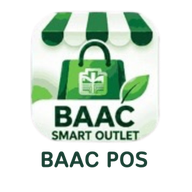

BAAC POS
ระบบบริหารร้านฝากขายอัจฉริยะ
เข้าสู่ระบบ BAAC POS →ติดตั้งผ่านเมนูเบราว์เซอร์: เพิ่มไปยังหน้าจอโฮม หรือ ติดตั้งแอปการใช้งานระบบขายต้องเชื่อมต่ออินเทอร์เน็ต

ระบบบริหารร้านฝากขายอัจฉริยะ
เข้าสู่ระบบ BAAC POS →ติดตั้งผ่านเมนูเบราว์เซอร์: เพิ่มไปยังหน้าจอโฮม หรือ ติดตั้งแอป